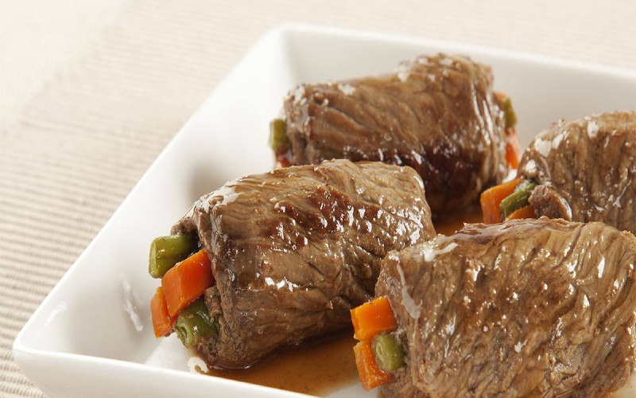

Bife a Rolê

Que tal uma receita deliciosa para animar o fim de semana? O Bife Rolê é uma boa pedida para quem quer dar uma variada no cardápio sem ter que pensar em ideias supercriativas. O Gshow mostra como preparar o prato saboroso que o É de Casa deste sábado, 9/3, ensinou. Dá uma olhada!
Ingredientes
-
260 gramas de bacon cortado em palitos com cerca de 6 centímetros de comprimento por meio cm de espessura
-
1 fio de azeite
-
1 quilo e 100 gramas de coxão duro cortado em bifes (10 bifes com cerca de 1 centímetro de espessura)
-
Sal, pimenta-do-reino moída e colorau a gosto
-
2 pimentões vermelhos sem pele cortados em tiras largas
-
1 cenoura descascada cortada em palitos ou 150 gramas
-
30 folhas de sálvia inteiras ou 3 folhas por bife
-
2 xícaras de chá ou 300 gramas de cebola picadinha
-
2 colheres de sopa de alho picadinho
-
Meia xícara de chá de alho-poró picado
-
Meia xícara de chá de sálvia picadinha
-
1 xícara de chá ou 240 mililitros de vinho branco
-
10 tomates cortados em cubos médios ou 1 quilo e 750 gramas
-
2 colheres de sopa de colorau
-
Sal e pimenta-do-reino a gosto
-
1 litro e meio de água
Modo de preparo
- Numa panela em fogo médio doure 260 gramas de bacon cortado em palitos com 1 fio de azeite, depois de dourados transfira para um prato e reserve
- Entre dois sacos plásticos bata levemente os bifes de coxão duro, tempere com sal, pimenta-do-reino moída e colorau a gosto
- Na ponta de cada bife temperado coloque 1 palito de bacon dourado, 1 tira larga de pimentão vermelho sem pele, 1 palito de cenoura descascado, 3 folhas de sálvia inteiras
- Enrole os bifes e prenda com palitos de madeira pequenos
- DICA: coloque em cada rolê sempre a mesma quantidade de palitos, assim na hora de retirar, você saberá quantos palitos tem que tirar de cada
- Na mesma panela onde dourou o bacon coloque os bifes à rolê, leve ao fogo médio e doure
- Vá virando os bifes com um pegador para dourar todos os lados. Cerca de 15 minutos.
- Retire da panela e reserve
- Coloque na mesma panela 2 xícaras de chá de cebola picadinha, 2 colheres de sopa de alho picadinho, meia xícara de chá de alho poró picado, meia xícara de chá de sálvia picadinha e refogue
- Adicione 1 xícara de chá de vinho branco e deixe evaporar
- Volte os bifes para a panela, acrescente 10 tomates cortados em cubos médios, 2 colheres de sopa de colorau, sal e pimenta-do-reino a gosto, 1 litro e meio de água, tampe a panela e deixe cozinhando por mais ou menos 2 horas
- Assim que começar a ferver, mexa de vez em quando
- Retire do fogo, remova os palitos e sirva com polenta